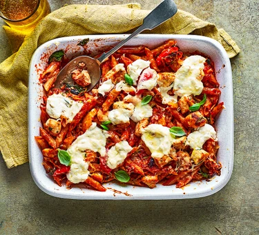

Health Chicken Pasta Bake

Ingredients
- 300g of Wholemeal Penne Pasta
- 2 tsp Olive Oil
- 2 Bell Peppers, deseeded and chopped
- 1 large Courgette, finely diced
- 3 large Garlic Cloves, finely grated
- 500g Passata
- 1 tbsp Smoked Paprika
- 11⁄2 tsp vegetable bouillon powder
- 1 tsp Chilli Powder
- 25g Kalamata olives, sliced
- 400g Chicken Breasts, cut into pieces
- Large handful of Basil, chopped, plus extra to serve
- 100g Ricotta Cheese
- 20g finely grated mature Cheddar Cheese
Cooking Method
- Cook the Penne Pasta following packaging guidelines. Heat the oven to 180°C/160°C fan/Gas mark 4.
- Meanwhile, heat the oil in a large pan over a medium heat and fry the peppers for 8 minutes, stirring until they start to soften. Add the courgette and garlic then stir for a few minutes more. Next pour in the passata and stir in the smoked paprika, bouillon, chilli, if using, and olives. Simmer for 3-4 minutes.
- Drain the pasta while making sure to save the pasta water. Pour the pasta into the passata mixture along with the chicken, half a mug of the pasta water and the basil. Stir together well, then transfer into a baking dish.
- Mix the ricotta in a bowl with 5 tbsp of the pasta water and spread across the top of the pasta. Sprinkle over the cheddar cheese, then bake for 35 mins. Once cooked, scatter with a few extra basil leaves and serve.
Click here to return to homepage.